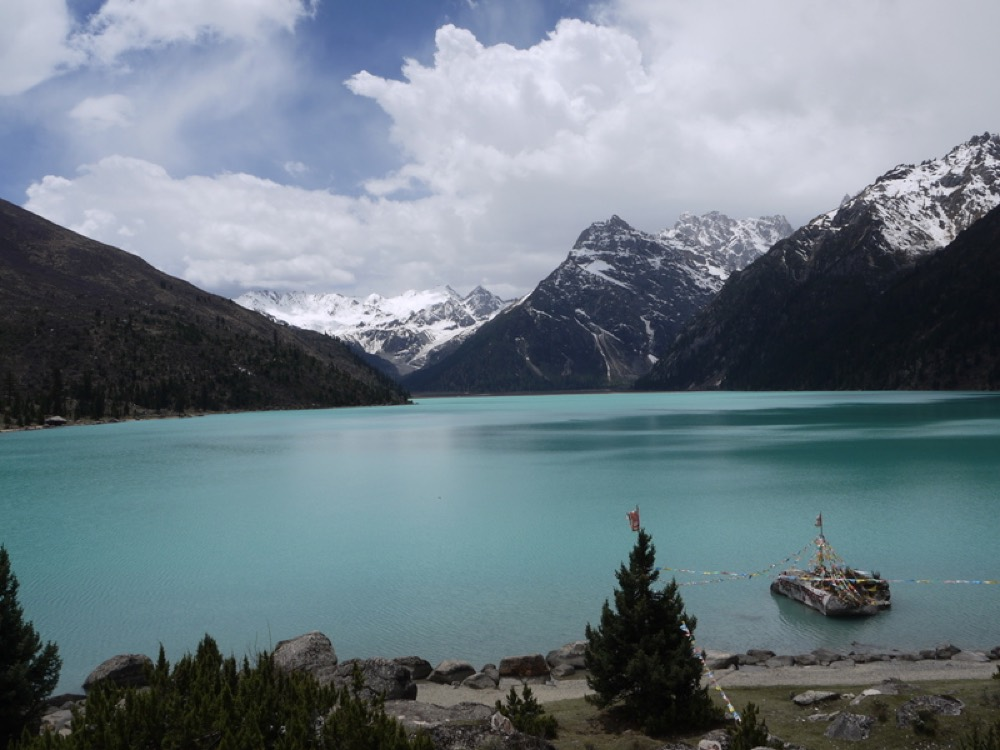

川藏北线 G317：成都到拉萨
沿更清静的川藏北线单程三周：丹巴古碉、道孚彩绘民居、德格印经院、昌都和那曲牧区草原，最后在拉萨住四晚，再飞回。
- 天数
- 20 天
- 里程
- 约 2,200 公里
- 最佳季节
- 9 月
- 每人（不含机票）
- 约 CNY 18,420 起
2026 年 11 月为 2027 年 9 月的行程所做的调研。证件、关闭景点、开放时间和价格都会变，出发前请与旅行社逐项确认。车程为保守估算（比导航软件慢），请以高德地图为准。
为什么选G317
进藏的文化之路：康区村寨、大寺院和至今仍用木版印经的德格印经院，然后穿过高原牧区，下到拉萨。海拔逐步上升，单段车程不超过约 3 小时，比 G318 清静得多。
9 月： 北线最好的月份：雨季结束，草原仍青黄相间，高原夜间冷但还不严寒（那曲约 0°C）。德格印经院正在印经。白天约 12.5 小时，不走夜路。10 月下旬起 5,000 米垭口会有冰雪。
最佳季节： 9 月最好：雨季结束，草原仍青黄相间，高原夜间冷但还不严寒，德格印经院正在印经。5 月下旬至 6 月其次（青绿，但夜间更冷，雨季开始）。避开 7–8 月（降雨和落石）、10 月下旬以后（5,000 米垭口冰雪，那曲夜间严寒，印经院可能闭馆）以及冬季。
路线： 成都 → 丹巴 → 道孚 → 甘孜 → 德格 → 江达 → 昌都 → 丁青 → 索县 → 那曲 → 拉萨，然后飞回成都或上海。20 天，约 2,200 公里，单段车程不超过约 3 小时，在拉萨住四晚。
亮点
- 丹巴甲居藏寨和梭坡古碉
- 道孚彩绘民居，炉霍和甘孜的青稞河谷
- 新路海和穿过 5,050 米山口的雀儿山隧道
- 仍在用木版印经的德格印经院
- 昌都、类乌齐寺大殿和北部高原牧区
- 拉萨：布达拉宫、大昭寺和八廓街、罗布林卡、色拉寺辩经
须知
- 外国游客不能在西藏自治区自由行：必须由持牌西藏旅行社按确切路线办理入藏函及其他证件，持证导游全程陪同。至少提前一个月申请。请旅行社书面确认在你的日期外国人可从岗托大桥入藏并经昌都、那曲：关于昌都的说法不一。
- 车辆：做外国人自驾的旅行社用自己的西藏牌照车辆，并为驾驶员办临时驾照；从成都租的车可能不被接受。车上还有导游，六人加行李请按两台车计划。
- 海拔是最大的风险。年长者或有心肺疾病的人请在预订前看医生。海拔是逐步上升的，但要连续 11 晚住在 3,270–4,500 米（甘孜到那曲），最高是那曲（4,500 米，第 15 天）；订供氧房，随身带血氧仪。拉萨之前只有昌都有大医院。
- 确认旅行保险是否承保你的年龄、自驾到约 5,100 米的海拔以及紧急转运。许多保单止于 3,000–4,000 米或 70–80 岁。
- 西藏自治区内的酒店须有接待外国人的资质；由旅行社按入藏函行程预订。3,000 米以上请要求供氧房。
- 2026 年对外国游客关闭：来古冰川和米堆冰川（对所有人关闭）、雅鲁藏布大峡谷、南伊沟、色达五明佛学院。出发前一个月再确认。
- 布达拉宫门票提前 10 天放出，周一闭馆（节假日除外）：选好出发日，让参观布达拉宫那天不是周一。由旅行社预订。
- G317 加油站间隔远：见站就加满，尤其在昌都和江达。很多路段没有手机信号。
- 回程：拉萨飞成都约 2 小时，每天很多班；飞上海直飞约 4–6 小时（每周班次少），或经成都、西安转机。
两种玩法
💰 最划算
- 住： 每座城市的“划算”选择，四星或平台同等级（见住宿）。
- 吃： 在评分好的平价老店吃地方特色。
- 每人约 CNY 18,420–30,080 元 （20 天，含旅行社车辆、导游和证件，不含到成都和从拉萨回程的机票）。
✨ 最佳体验
- 住： 拉萨的瑞吉或香格里拉（客房供氧），高海拔夜晚选评分最好、有供氧的酒店，丹巴和德格选有特色的藏式酒店（见住宿）。
- 吃： 成都正宗火锅，以及拉萨最好的藏餐和尼泊尔餐厅。
- 每人约 CNY 24,240–38,310 元。
两种玩法路线和天数相同，只是住宿和餐饮不同。
路线地图
● 带序号：按顺序的住宿城市 ● 开车日途经的景点或午餐。 点击地点可看是第几天。 路线按 OpenStreetMap 路网绘制，仅供参考。
行程：20 天 19 晚
每个开车日要么只开一段（早出发，赶到目的地吃迟午餐，下午只看景点），要么分上午、下午两段，中间停下吃午餐。去景点的短途不计。
上午
抵达入住；海拔 500 米，第一天轻松安排。
午餐
午餐：川菜经典（麻婆豆腐、回锅肉）；可要求微辣。
下午
人民公园喝茶，逛宽窄巷子。
上午
开门即去大熊猫基地，此时熊猫最活跃（路面平坦，有观光车）。
午餐
基地附近或市区午餐。
下午
四川博物院，或武侯祠和锦里。购买血氧仪和便携氧气；与旅行社碰面说明行程。
上午
🚗 成都 → 日隆 · 199 km · 3 小时
约 8:00 出发，经卧龙和巴朗山隧道（出发前一周查看 G350 施工管制时间）。
午餐
在日隆午餐，可看四姑娘山。
下午
🚗 日隆 → 丹巴 · 114 km · 2 小时 45
沿小金河谷下到丹巴（1,900 米），从成都出发后平缓的第一步。
上午
坐车到甲居藏寨观景台（寨内小路台阶多）。
午餐
在丹巴午餐。
下午
在路边看梭坡古碉群；休息。
上午
🚗 丹巴 → 八美 · 91 km · 2 小时
约 9:00 出发沿大渡河谷上行。
午餐
在八美午餐，周围是惠远寺一带的花岗岩小山。
下午
🚗 八美 → 道孚 · 79 km · 1 小时 30
道孚（约 2,980 米）和彩绘木结构民居。
上午
🚗 道孚 → 炉霍 · 70 km · 1 小时 15
约 9:30 出发。
午餐
在炉霍午餐。
下午
🚗 炉霍 → 甘孜 · 96 km · 1 小时 45
沿青稞田和藏房点缀的河谷到甘孜（3,390 米）。
上午
在 3,390 米休整适应，再上高原；洗衣服。
午餐
在县城午餐。
下午
体力允许可坐车去县城上方的甘孜寺。
上午
🚗 甘孜 → 马尼干戈 · 93 km · 1 小时 45
约 9:00 出发。
午餐
在马尼干戈午餐，几分钟外就是新路海：湖边小路平缓。
下午
🚗 马尼干戈 → 德格 · 91 km · 1 小时 45
过雀儿山隧道（取代了 5,050 米的垭口），下到德格（3,270 米）。
上午
德格印经院（09:00–11:30；院内楼梯陡、光线暗：在一楼看即可），再看旁边的更庆寺。
午餐
在德格午餐。
下午
休息。
上午
🚗 德格 → 江达 · 93 km · 2 小时
约 9:00 出发，跨金沙江进入西藏自治区；导游在桥头接团并办理检查站手续。
午餐
在江达吃迟午餐。
下午
休息；在这里加满油。
上午
🚗 江达 → 妥坝 · 117 km · 2 小时 15
约 8:30 出发。部分路段路况差。
午餐
在妥坝一带的路边吃简单午餐（带些零食）。
下午
🚗 妥坝 → 昌都 · 113 km · 2 小时 15
下到藏东最大的城市昌都（3,270 米）。
上午
休息、洗衣，或作为应对前面路段延误的机动日。
午餐
在城内午餐。
下午
体力允许可去两河交汇处上方的强巴林寺。明天出发前加满油。
上午
🚗 昌都 → 类乌齐 · 90 km · 1 小时 45
约 9:00 出发。
午餐
在类乌齐午餐，参观类乌齐寺的大殿“查杰玛”。（孜珠寺要走烂路上到约 4,800 米：不在本行程内。）
下午
🚗 类乌齐 → 丁青 · 145 km · 2 小时 45
继续到丁青（约 3,830 米）。
上午
🚗 丁青 → 荣布 · 127 km · 2 小时 15
约 8:30 出发翻过高山垭口。
午餐
在荣布吃简单的午餐。
下午
🚗 荣布 → 索县 · 120 km · 2 小时 30
经巴青到索县（约 3,990 米）。
上午
🚗 索县 → 夏曲 · 130 km · 2 小时 30
约 9:00 出发向西穿过牧区草原。
午餐
在夏曲吃简单的午餐。
下午
🚗 夏曲 → 那曲 · 101 km · 1 小时 45
那曲（4,500 米），全程最高的一晚：住供氧房，不安排活动，早睡。明天就下降了。
上午
🚗 那曲 → 当雄 · 166 km · 2 小时
约 9:00 出发走拉那高速，沿途是念青唐古拉山脉。
午餐
在当雄午餐（约 4,200 米）。
下午
🚗 当雄 → 拉萨 · 163 km · 2 小时
下到拉萨（3,650 米）。在酒店休息。
上午
上午参观大昭寺（提前一天预约），然后跟着朝圣者顺时针慢慢转八廓街。
午餐
在八廓街附近午餐：藏面、包子和甜茶。
下午
休息。傍晚在布达拉宫广场看布达拉宫。
上午
凭提前 10 天放出的分时票参观布达拉宫（周一闭馆，节假日除外）。主线路约 1,000 级台阶：慢慢走。轻松选择：宫墙下新开的雪城线路（不进入宫殿）。
午餐
午餐后好好休息。
下午
轻松的下午；晚餐吃尼泊尔菜或藏餐。
上午
罗布林卡，达赖喇嘛的夏宫园林：路平、轻松。
午餐
在城内午餐。
下午
色拉寺僧人辩经（除周日外大多数下午），或休息；最后一晚再逛八廓街。
上午
前往拉萨贡嘎机场（约 1 小时）。飞成都（约 2 小时，每天很多班）或上海（直飞约 4–6 小时，每周班次少；或经成都、西安转机）。
午餐
在机场或飞机上用餐。
下午
自驾、证件与海拔
- 在西藏自治区内（从德格附近的岗托大桥起），外国游客只能按旅行社安排的行程、在持证导游陪同下旅行。导游保管证件并办理检查站手续，每天会遇到好几次检查。
- 外国人“自驾”指驾驶旅行社自己的西藏牌照车辆，驾驶员办临时中国驾照，导游随车。请书面确认：车型、保险、是否需要保障车，以及进藏前和出藏后四川段如何安排。
- 西藏境内用区间测速限速（G318 上很常见，G317 也在增加）；按每小时约 40 公里计划，超速罚款约 1,200 元。本指南的车程已考虑这一点。
- 道路：雀儿山隧道（2017 年）取代了 5,050 米的垭口，进拉萨的最后一天走免费高速。丁青到那曲之间白天仍要翻几座 4,400–5,000 米的垭口：只停下拍照。马尔康附近的 G317 大桥 2025 年底垮塌，所以本路线从丹巴进。
- 燃油：以汽油为主，充电只当额外补充。小城常没有 95 号汽油；北线可靠的加油点是昌都和江达。
- 海拔：随身带血氧仪和便携氧气；出发前问医生是否用乙酰唑胺。静息血氧持续低于约 85%，或头痛不止、呕吐、静息时气促或意识模糊，应下撤：不要靠吸氧硬撑。
- 医院：最好的在拉萨（西藏自治区人民医院）和昌都；甘孜州医院在康定，不在路线上；其他地方是县医院。紧急情况主要靠陆路转运；按下撤来计划，不要指望直升机。紧急电话：报警 110，急救 120。
- 手机和支付：办一张中国 +86 手机卡，出发前开通支付宝和微信支付；小城信号不稳，带些现金。提前下载离线地图。
- 总里程：约 2,200 公里。
全团旅行社费用（估算，待报价） 两台旅行社车辆 20 天（一台自驾，每天约 1,000–1,800 元；一台含司机，每天约 1,500–2,500 元），另加车辆空驶回成都的 4–5 天，西藏境内约 11 天的持证导游（每天 300–900 元）、证件（每人 250–400 元）、司机和导游的食宿，以及油费和过路费。为 2026 年所见市场价，请取得三家书面报价。
| 全团 | 每人（6 人） | |
|---|---|---|
| 旅行社车辆、司机、导游、证件、油费和过路费 | CNY 74,800–133,900 | CNY 12,470–22,320 |
必去景点





成都
- 成都大熊猫繁育研究基地: 海拔约 500 米的林间熊猫园；园区大且有坡，建议坐电瓶车，开园（07:30）时熊猫最活跃。 07:30–18:00 (morning entry 07:30–12:00, afternoon 12:00–17:00) · 55 元 · 官方微信/官网或携程凭护照实名分时预约；据报 60 岁以上免票（护照是否适用待核实）
- 武侯祠与锦里: 纪念诸葛亮与三国的祠庙；园林平坦、有少量门槛，步行约 1 公里；隔壁锦里免费。 09:00–19:00 (last entry 18:00) · 50 元 · 仅官网/微信购票；护照购票者入口扫码；馆方称未授权任何第三方代售
四姑娘山/日隆
- 四姑娘山双桥沟 UNESCO: 四姑娘山最轻松的一条沟：观光车上行约 30 公里到约 3,800 米，沿途木栈道平坦，长者几乎不用走。属四川大熊猫栖息地世界遗产。 08:00–17:30 (last entry 15:00) · 150 incl. bus (seniors 70; 65+ entry free) 元 · 四姑娘山公众号/携程凭护照预订；65 岁以上免票是否适用护照待确认
丹巴
甘孜
- 甘孜寺: 甘孜县城山坡上的格鲁派大寺（约 3,400 米），可望雀儿山；车可上山，之后有台阶。 ? · ? 元 · 未核实
新路海
- 玉隆拉措（新路海）: G317 马尼干戈附近海拔约 4,040 米的冰川湖，2025 年 2 月评为 4A；湖边栈道，走前几百米即可。 08:30–18:30 · ? 元 · 现场；票价未查到
德格
昌都
类乌齐
- 类乌齐查杰玛大殿: 杨贡寺下属的 13 世纪巨型大殿，海拔约 3,800 米；单层，入口平坦。 ? · ? 元 · 请向导确认
索县
- 索县赞丹寺: 被称为“小布达拉宫”的山顶寺院，海拔约 3,950 米；车可上山，殿间有台阶。 10:00–18:30 · free (reported) 元 · 请向导确认
拉萨
- 布达拉宫（主线） UNESCO: 历代达赖喇嘛冬宫。长者难度大：从海拔约 3,650 米爬约 1,000 级台阶（13 层），宫内木梯陡，参观约 1.5–2 小时，按时段入场。较易选择：山脚雪城线路（见下）以及广场或药王山观景。 09:00–15:40 last entry (early May–late October); 09:30–15:20 in winter · 休：Mon (周一), except public holidays · 200 (peak, route 1); route 2: 100 元 · 仅官方微信小程序实名预约，约提前 7–10 天；每证件 7 天限约一次，不可改；外籍：由西藏地接社凭护照扫描件代订，入场带同一本护照。选非周一的日子。
- 布达拉宫雪城线路 UNESCO: 2026 年 9 月中旬开通：布宫山脚雪城（珍宝馆、雪监狱、造币厂、贵族宅院），东门和南门进；地面平坦，不进宫体。适合长者。 09:00–15:40 last entry (peak) · 休：Mon (周一), except public holidays (assumed same as palace) · 25 (peak early May–late October) 元 · 同一官方小程序单独购票；外籍：由西藏地接社凭护照扫描件代订，入场带同一本护照；电话 0891-6332558
- 大昭寺 UNESCO: 藏地最神圣的寺庙；大致平坦，殿堂昏暗拥挤，上金顶有楼梯（可不上）。约 1 小时。 08:30–17:30 (timed entry 08:30–13:30, afternoon untimed) · 85 元 · 提前 1 天在大昭寺小程序预约；外籍：由西藏地接社凭护照扫描件代订，入场带同一本护照
- 罗布林卡 UNESCO: 达赖喇嘛夏宫园林；平坦但面积大（全走约 2–3 公里），有另付费观光车。 ~09:30–18:00 (winter hours; summer not found) · 60 (cart and zoo extra) 元 · 现场或地接社；外籍：由西藏地接社凭护照扫描件代订，入场带同一本护照
- 色拉寺辩经: 僧人在辩经场辩经，周一至周六 15:00–17:00（周日无）；从寺门到辩经场缓坡约 300–400 米，海拔约 3,800 米，树荫下可坐。 ~09:00–17:00 · 休：Debate not on Sun (周日无辩经) · 50 元 · 现场购票；外籍：由西藏地接社凭护照扫描件代订，入场带同一本护照
展览
- 沿线所有博物馆: 2027 年展览尚未公布 2026 年 11 月查询：四川博物院和西藏博物馆都尚未公布 2027 年 9–10 月的展览。金沙遗址博物馆改造后预计 5 月上旬重开，或有新展厅，请于 2027 年春查看其公众号。国内博物馆一般提前一到三个月公布展览。
- 博物馆一般只提前几周公布 2027 年秋季展览，届时会更新本节。
博物馆
| 博物馆 | 开放时间 | 休馆 | 门票 |
|---|---|---|---|
| 四川博物院 成都 | 09:00–17:00 (holiday hours to 18:30) | Mon (周一) | free 四川博物院微信服务号实名预约；护照入馆方式未确认 |
| 金沙遗址博物馆 成都 | ? | Closed until 30 Apr 2027; Mon (周一) previously | ? (70 before closure, unverified) 2027 年确认重开后的预约规则 |
| 成都武侯祠博物馆 成都 | 09:00–19:00 (last entry 18:00) | 50 官网/微信；护照入口扫码 | |
| 昌都博物馆 昌都 | ? | ? | ? 请向导确认 |
| 西藏博物馆 拉萨 | ~09:30–17:30 or 18:30 (sources differ) | Mon (周一), except holidays | free 据报免费预约；外籍：由西藏地接社凭护照扫描件代订，入场带同一本护照。9 月下旬周一闭馆，请 28–30 日去 |
中国大多数博物馆周一闭馆，免费参观也需用护照实名预约。
吃什么
每站都有午餐和晚餐选择。标签为对应平台的评分和评论数，多为携程（满分 5 分；4.5 以上且 150 条以上评论为我们的标准）。大众点评评分未出现在搜索结果中，且其拦截自动访问，故未采用。低于标准的店仅在沿途没有更好选择时保留，并加注明。2026 年 11 月读取；价格为人均。
按 20 天行程：第 1 天：午餐 成都，晚餐 成都 · 第 2 天：午餐 成都，晚餐 成都 · 第 3 天：午餐 日隆，晚餐 丹巴 · 第 4 天：午餐 丹巴，晚餐 丹巴 · 第 5 天：午餐 八美，晚餐 道孚 · 第 6 天：午餐 炉霍，晚餐 甘孜 · 第 7 天：午餐 甘孜，晚餐 甘孜 · 第 8 天：午餐 马尼干戈 / 新路海，晚餐 德格 · 第 9 天：午餐 德格，晚餐 德格 · 第 10 天：午餐 江达，晚餐 江达 · 第 11 天：午餐在途中，晚餐 昌都 · 第 12 天：午餐 昌都，晚餐 昌都 · 第 13 天：午餐 类乌齐，晚餐 丁青 · 第 14 天：午餐 荣布 / 赤多，晚餐 索县 · 第 15 天：午餐 夏曲，晚餐 那曲 · 第 16 天：午餐在途中，晚餐 拉萨 · 第 17 天：午餐 拉萨，晚餐 拉萨 · 第 18 天：午餐 拉萨，晚餐 拉萨 · 第 19 天：午餐 拉萨，晚餐 拉萨。（跟随上面的行程。）
成都
- 午餐: 陈麻婆豆腐（青华路店） 携程 4.6 (低于 4.5 或评论较少): 正宗麻婆豆腐、回锅肉、鱼香茄子；不吃辣可点不辣豆腐、粉蒸排骨. 60–75 元
- 午餐: 盘飧市（春熙路店） 携程 4.5 · 115 条 (低于 4.5 或评论较少): 百年老字号卤菜、凉拌菜；多数不辣. 70 元
- 午餐: 易老妈蹄花·特色川菜（人民公园总店） 携程 4.4 · 437 条 (低于 4.5 或评论较少): 雪豆蹄花汤（不辣，适合长辈）、川味家常菜. 55 元
- 午餐: 嘉州叶婆婆钵钵鸡（太古里店） 携程 4.9 · 491 条: 乐山钵钵鸡，红油或藤椒；小吃午餐. 49 元
- 晚餐: 吼堂老火锅（太古里总店） 携程 4.9 · 220 条: 牛油火锅：鲜毛肚、鸭肠、牛肉；不吃辣可点鸳鸯锅清汤. 112 元
- 晚餐: 宽巷子3号·新派川菜（宽窄巷子店） 携程 4.5 · 288 条: 宅院新派川菜，套餐辣与不辣搭配. 298 元
- 晚餐: 马旺子·川小馆 携程 4.4 · 358 条 (低于 4.5 或评论较少): 经典川菜：宫保鸡丁、回锅肉，有清淡汤菜. 117 元
- 晚餐: 成都香格里拉大酒店·香宫 携程 4.7 · 70 条 (低于 4.5 或评论较少): 粤菜和精致川菜；长辈清淡首选. 216 元
- 晚餐: 玉芝兰 (低于 4.5 或评论较少): 兰桂均主理，精致清淡川菜套餐，招牌细面.
- 甜品: 何记蛋烘糕（文庙西街店） 携程 4.9 · 45 条 (低于 4.5 或评论较少): 成都蛋烘糕，甜馅. 15–25 元
日隆（四姑娘山镇）
- 午餐: 四姑娘山阿巴郎·度假花园美宿·藏式花园餐厅 携程 4.6 · 11 条 (低于 4.5 或评论较少): 牦牛肉汤锅、野菌炒腊肉、青稞酸奶饼；不辣. 75 元
- 午餐: 食味轩川菜饭店 携程 4.0 · 9 条 (低于 4.5 或评论较少): 牛肉面、土豆腊肉、卤牦牛肉、松茸炖鸡汤. 38 元
丹巴
- 午餐: 郑姐私房菜·家常菜 携程 4.9 · 7 条 (低于 4.5 或评论较少): 家常菜：凉拌鱼、凉拌鸡、耙鸡脚. 43 元
- 晚餐: 丹巴光与林酒店·及所悬崖餐厅 携程 4.2 · 5 条 (低于 4.5 或评论较少): 手抓牦牛肉、高山腊味拼盘；观景. 97 元
八美
- 午餐: 阿洛藏餐 携程 4.6 · 5 条 (低于 4.5 或评论较少): 爆炒牛肉、干锅牦牛肉、酥油茶. 67 元
- 午餐: 道孚乾宁庄园（八美镇店）·餐厅 携程 5.0 · 1 条 (低于 4.5 或评论较少): 红烧牦牛肉、干拌牛肉、柴火鸡. 58 元
道孚
炉霍
甘孜
马尼干戈 / 新路海
- 午餐: 德格梅朵月光民宿·梅朵月光餐饮 携程 4.0 · 3 条 (低于 4.5 或评论较少): 民宿家常菜，近新路海.
- 午餐: 德格仓央嘉措情歌大酒店（马尼干戈店）·餐厅 (低于 4.5 或评论较少): 酒店川菜藏餐.
德格
- 午餐: 牟子胡胖鲜烧牛肉（德格县） (低于 4.5 或评论较少): 鲜烧牛肉、鲜烧牛杂. 38 元
- 晚餐: 家香园 (低于 4.5 或评论较少): 腊蹄火锅（不辣）、野菌炒腊肉、红烧牦牛肉. 72 元
江达
- 午餐: 和顺源 (低于 4.5 或评论较少): 石锅酸汤牦牛肉、鱼香茄子、麻婆豆腐. 54 元
- 晚餐: 江达格林万豪酒店·私房菜 (低于 4.5 或评论较少): 特色烤鱼、回锅肉套餐. 80 元
昌都
- 午餐: 云南塘火人家腊排骨（启赤花园店） 携程 4.3 · 8 条 (低于 4.5 或评论较少): 云南腊排骨汤锅；不辣. 68 元
- 晚餐: 蜀中吴石锅养身板栗鸡（茶马广场店） 携程 4.7 · 11 条 (低于 4.5 或评论较少): 石锅板栗鸡；不辣. 131 元
- 晚餐: 蜀香云庭火锅（卡诺国际店） 携程 3.7 · 6 条 (低于 4.5 或评论较少): 四川牛油火锅；不吃辣点鸳鸯锅. 136 元
类乌齐
- 午餐: 川邛饭店 (低于 4.5 或评论较少): 铁板牛肉、姜汁肘子、豌豆尖. 53 元
- 午餐: 邛崃饭店（小康路店） 携程 5.0 · 1 条 (低于 4.5 或评论较少): 川味家常菜.
丁青
- 午餐: 添又添牛蹄汤锅（丁青店） 携程 5.0 · 51 条 (低于 4.5 或评论较少): 牦牛蹄汤锅（清汤不辣）或麻辣锅. 74 元
- 晚餐: 丁青虫草大酒店·汤碗川菜 携程 5.0 · 4 条 (低于 4.5 或评论较少): 川菜：蒜泥白肉、花椒排骨、鲜辣乌鱼片. 71 元
荣布 / 赤多（G317）
- 午餐: 路边小饭馆或自带午餐 (低于 4.5 或评论较少): 面条、简单川菜.
索县
- 午餐: 赵氏手搓面 (低于 4.5 或评论较少): 手搓面；不辣.
- 晚餐: 酒店餐厅 (低于 4.5 或评论较少): 川味家常菜.
夏曲
- 午餐: 路边川菜馆、面馆或自带午餐 (低于 4.5 或评论较少): 面条、简单小炒.
那曲
拉萨
- 午餐: 老光明岗琼甜茶馆 携程 4.6 · 366 条: 甜茶、藏面、牛肉包子；地道，不辣. 9 元
- 午餐: 玛吉阿米·餐吧 携程 4.4 · 416 条 (低于 4.5 或评论较少): 八廓街屋顶藏餐尼泊尔菜：牦牛咖喱、馍馍、酥油茶. 89 元
- 午餐: 安多诺增藏餐（一分店） 携程 4.8 · 55 条 (低于 4.5 或评论较少): 藏餐：牦牛肉、包子、糌粑、酸奶；不辣. 83 元
- 午餐: 吉祥圣雪藏餐 携程 4.6 · 86 条 (低于 4.5 或评论较少): 藏式家常菜、甜茶. 84 元
- 晚餐: 拉萨厨房 携程 5.0 · 55 条 (低于 4.5 或评论较少): 尼泊尔、印度、藏餐：咖喱、馍馍、馕；可要不辣咖喱. 58 元
- 晚餐: 娜玛瑟德餐厅（宇拓路店） 携程 4.1 · 282 条 (低于 4.5 或评论较少): 尼泊尔印度菜：扁豆饭、咖喱、牦牛排. 74 元
- 晚餐: 尼泊尔雪莲餐厅 携程 4.0 · 22 条 (低于 4.5 或评论较少): 尼泊尔人经营：牦牛排、印度鸡肉炒饭、尼泊尔甜茶. 82–88 元
- 晚餐: 九门川菜府邸 携程 4.7 · 6 条 (低于 4.5 或评论较少): 经典川菜；可要微辣或不辣.
- 晚餐: 田村·酸汤鲜牦牛肉火锅藏餐厅（大昭寺店） 携程 5.0 · 17 条 (低于 4.5 或评论较少): 酸汤鲜牦牛肉火锅；酸而不辣. 86 元
- 晚餐: 拉萨松赞林卡酒店·中餐厅 携程 5.0 · 7 条 (低于 4.5 或评论较少): 精品酒店中餐与藏餐，近布达拉宫；正式晚餐. 199 元
- 晚餐: 拉萨香格里拉大酒店·香宫 携程 5.0 · 7 条 (低于 4.5 或评论较少): 粤菜和川菜；长辈清淡选择.
购物
- 宽窄巷子 (成都): 清代街巷：茶馆、川味小吃、手工艺品，旁边泡桐树街有咖啡馆书店；平坦、免费。 all day (shops ~10:00–22:00)
- 锦里 (成都): 武侯祠旁的灯笼古街：小吃、皮影、蜀锦纪念品；免费。 all day (shops ~10:00–22:00)
- 印经院经版印刷品 (德格): 印经院出售手工印制的经文和木版画。 with Parkhang hours
- 八廓街 (拉萨): 绕大昭寺转经道；经幡、藏香、唐卡、绿松石、牦牛绒围巾；平坦但拥挤，要砍价。 all day (shops ~09:00–22:00)
住宿
每座城市两个选择：划算（四星或平台同等级；平台等级不等于官方星级）和最佳体验。酒店不应拒绝外国客人，但请书面确认可为 6 本外国护照登记、并有大型 MPV 车位。价格为每间每晚（人民币），为 2026 年 11 月查到的 9 月或 10 月价格；尚无报价的为一般价格。西藏自治区内由旅行社按入藏函预订有涉外资质的酒店，以下仅供参考。
| 城市 | 💰 划算 | ✨ 体验 |
|---|---|---|
| 成都 2 晚 | 成都天府广场智选假日酒店 Booking.com /10, 2,562 reviews 8.8 CNY 374 · 有电梯、无障碍客房和带扶手的卫生间；有车库。国际连锁，可接待外籍护照。 | 成都尼依格罗酒店 Booking.com /10, 224 reviews 9.3 CNY 1574 · 国金中心高层客房，室内恒温泳池，有充电桩；距宽窄巷子约 3.5 公里。博舍未在 Booking.com 上架，未获报价。 |
| 丹巴 2 晚 | 央境民宿（丹巴中路藏寨店） Ctrip /5, 71 reviews 4.9 CNY ~320 · 2026 年翻新，点评少。可接待任何国家/地区客人。有电梯；在路边，好找。丹巴海拔约 1,900 米。县城汉庭（4.6 分，804 条）为朴素备选，车库小。 | 暮山映雪·私汤别院（丹巴甲居藏寨店） Ctrip /5, 949 reviews 4.5 CNY ~440 · 甲居山上的私汤客房。可接待任何国家/地区客人；有电梯。山路窄但已铺装，请白天抵达。光与林悬崖私汤和星空摄影美宿未选：仅接待 18–75 岁。 |
| 道孚 1 晚 | 道孚康藏·国际酒店 Ctrip /5, 872 reviews 4.5 CNY ~334 · 2021 年开业，四星级。可接待任何国家/地区客人。有电梯；未列供氧（道孚海拔约 3,000 米）。 | 道孚麦粒文化主题酒店 Ctrip /5, 255 reviews 4.8 CNY ~320 · 2025 年开业，藏文化主题，县城评分最高。可接待任何国家/地区客人。有电梯；未列供氧。与实惠之选价位相近。 |
| 甘孜 2 晚 | 维也纳酒店（甘孜格萨尔王城317国道店） Ctrip /5, 1,162 reviews 4.8 CNY ~187 · 2025 年开业。可接待任何国家/地区客人。有电梯；有新风系统，未列供氧。甘孜海拔约 3,390 米。 | 甘孜智选假日酒店 Ctrip /5, 98 reviews 4.8 CNY ~287 · 2026 年开业。可接待任何国家/地区客人。夜间客房弥散供氧；有电梯。 |
| 德格 2 晚 | 德格善地大酒店 Ctrip /5, 123 reviews 4.5 CNY ~250–400 · 2019 年开业，86 间房。可接待任何国家/地区客人。有电梯（据住客）。未列供氧；德格海拔约 3,270 米。 | 德格绛红天堂主题文化酒店 Ctrip /5, 111 reviews 4.6 CNY ~227 · 2021 年开业；藏式主题客房，步行即到印经院。可接待任何国家/地区客人；有电梯。未列供氧。德格非遗酒店未选：仅接待 18–70 岁。 |
| 江达 1 晚 | 江达汇胜酒店 Ctrip /5, 55 reviews 4.9 CNY ~250–400 · 2026 年新开，点评少。江达唯一查到可接待任何国家/地区客人的酒店；两档均选此店。全楼弥散供氧加鼻吸；有电梯。江达海拔约 3,550 米。宗托和藏东只接待内地/港澳台证件。Trip.com 同一编号显示为"美豪酒店"，请确认店名。 | 江达汇胜酒店 Ctrip /5, 55 reviews 4.9 CNY ~250–400 · 未找到更好的选择：江达只有小型二三星酒店。 |
| 昌都 2 晚 | 维也纳酒店（昌都茶马广场强巴林寺店） Ctrip /5, 779 reviews 4.5 CNY ~274 · 2025 年开业。可接待任何国家/地区客人。仅 6–7 楼有弥散供氧，请指定。有电梯。车位小且坡陡，请确认两台大型 SUV 能停。昌都海拔约 3,250 米。 | 昌都通泰明宇丽呈酒店 Ctrip /5, 1,248 reviews 4.7 CNY 474 · 2019 年开业；昌都四星级榜首，江景。可接待任何国家/地区客人。有电梯；仅有住客提到富氧房，请询问。停车位紧张。 |
| 丁青 1 晚 | 丁青四季富氧酒店 Ctrip /5, 281 reviews 4.2 CNY ~220 · 县城中心唯一查到可接待任何国家/地区客人的酒店；两档均选此店。2019 年开业；弥散供氧加制氧机（有住客觉得弱）；有观光电梯。丁青海拔约 3,900 米。唐蕃大酒店（2024）只接待内地/港澳台证件。 | 丁青四季富氧酒店 Ctrip /5, 281 reviews 4.2 CNY ~220 · 未找到更好的选择。觉恩拓罗仓大酒店（4.4 分）也接待外宾、有电梯，但在县城外的觉恩乡，且未列供氧。 |
| 索县 1 晚 | 索县塔嘎德大酒店 Ctrip /5, 774 reviews 4.6 CNY ~240 · 2024 年开业。可接待任何国家/地区客人。房内制氧机，另有"智能+供氧房"；有电梯。索县海拔约 3,950 米。索县富氧大酒店和尚客优只接待内地身份证。 | 雲璟酒店 Ctrip /5, 155 reviews 4.6 CNY ~274–867 · 2026 年新开，索县四星级榜首。可接待任何国家/地区客人；未列年龄限制。住客称供氧充足（方式未核实）；有电梯（有刷卡故障报告）。地下车库灰尘大、有漏水。 |
| 那曲 1 晚 | 星空富氧酒店 Ctrip /5, 60 reviews 4.4 CNY ~253 · 可接待任何国家/地区客人。据住客，客房弥散医用氧；有电梯。点评少。那曲海拔约 4,500 米，全程最高：对年长者风险大，可考虑从拉萨飞回。 | 维也纳国际酒店（那曲市中心店） Ctrip /5, 1,833 reviews 4.5 CNY 447 · 2022 年开业。可接待任何国家/地区客人；年龄限制 18–99 岁。壁挂式弥散供氧，有电梯和室内停车场。评分更高的云天州际未选：仅接待 18–75 岁。 |
| 拉萨 4 晚 | 拉萨春秋富氧酒店（布达拉宫八廓街店） Ctrip /5, 5,261 reviews 4.8 CNY ~193 · 2021 年开业。可接待任何国家/地区客人。客房 24 小时供氧（鼻吸），另有微压氧舱；有电梯。步行可到大昭寺和八廓街。拉萨海拔约 3,650 米。希尔顿欢朋未选：仅限 18–70 岁办理入住。 | 拉萨瑞吉度假酒店 Booking.com /10, 46 reviews 8.7 CNY 1799 · 有可供氧房（携程标签）；有电梯、室内恒温泳池和水疗。国际酒店，可外宾预订。拉萨香格里拉该日期在 Booking.com 无房。 |
预算
每人 20 天费用，六人住三间、两台旅行社车辆，不含到成都和从拉萨回程的机票。
- 💰 最划算： 约 CNY 18,420–30,080
住宿 2,440–3,060 + 旅行社车辆、导游和证件 12,470–22,320 + 餐饮 3,010–4,030 + 门票 510–660 - ✨ 最佳体验： 约 CNY 24,240–38,310
住宿 7,360–8,890 + 旅行社车辆、导游和证件 12,470–22,320 + 餐饮 3,910–6,450 + 门票 510–660 - 计算方法：住宿按每晚所选酒店的调研价格（6 人住 3 间）；餐饮按所列餐厅的午餐加晚餐 (平均约 CNY 60 午餐, 110 晚餐，每人)；门票按所列景点；旅行社费用（车辆、司机、导游、证件、油费和过路费）为市场估算。
未包含
- 机票：到成都的去程，以及从拉萨的回程（到成都约 2 小时，1,090–1,760 元；到上海直飞约 4–6 小时或经停一次，约 1,500–3,500 元）
- 早餐（除非房价已含）
- 自选项目：其他索道、跑马山、景区讲解、未列出的四姑娘山沟谷
- 酒店和景点停车费
- 旅游、医疗和救援保险（注意年龄和海拔上限）
- 便携制氧机、血氧仪和氧气罐
- 手机流量或 eSIM、洗衣、给导游和司机的小费
- 购物和纪念品
- 涨价：黄金周加价，以及现在到出行期间的价格变化
- 因塌方、降雪、道路或景点关闭，或有人从拉萨提前飞回导致的改期改线
- 途中饮用水和零食
- 建议另留 10–15% 机动金
酒店价格为快照，旅行社车辆、导游和证件为估算。区间代表本指南中较便宜与较贵的选择。
季节须知
- 天气：9 月是这条线雨季的尾声，拉萨约一半日子下雨（69–100 毫米），康区河谷更多；10 月干燥晴朗（拉萨约 9 毫米）。拉萨 9 月白天 17–23°C，10 月 12–17°C，夜间 6–8°C 降到约 0°C。
- 海拔与寒冷：从 9 月下旬起，G317 大部分住地（甘孜、德格、江达、丁青、索县、那曲约 4,500 米）夜间都在零下，5,000 米垭口随时可能下雪；10 月下旬起开始有结冰预警。备好羽绒服、帽子、手套，每车带氧气。
- 日照：9 月中约 12.5 小时，10 月中约 11.5 小时。全国用北京时间，拉萨日出约 07:40–08:00，日落约 19:50–20:20；上午行车，天黑前到住地。
- 国庆黄金周（10 月第一周）：G317 比 G318 清静得多，但德格、昌都和拉萨的酒店仍紧张、涨价，那一周的住宿要早订。布达拉宫等周一闭馆的场所节假日照常开放。
- 道路风险：9 月降雨和落石逐渐减少；江达县部分路段路况差。10 月下旬起高海拔路段开始结冰（2025 年 10 月下旬江达县曾发布道路结冰黄色预警），德格印经院 10 月以后可能冬季闭馆。沿途检查站查护照和证件；每晚确认路况。
信息来源
查询日期：2026 年 11 月。尽量采用官方公告；证件信息多来自持牌旅行社，部分说法互相矛盾，文中已注明。酒店评分和价格来自携程或 Booking.com；餐厅评分来自携程（未采用大众点评）。车程为我们的估算：采用导航路网的里程，西藏境内按约每小时 40 公里（区间测速）、四川山区按导航用时的 1.5–2 倍计，并对照 2025–2026 年游记，2026 年 11 月 28 日经 Kimi 联网核查。所有内容均以我们自己的话整理。 调研方法 →
- Guangming Daily: Potala Snow City route (Sep 2026) · Chutian Metro Daily: Snow City route · TravelersToday: Potala Monday closure (Sep 2026) · China Daily: Potala Monday closure (Nov 2025) · Tibettravel.org: Potala ticket booking · Sina Travel: Potala booking 2026 · Windhorse: Tibet travel 2026 · Ctrip: Jokhang · Tibettravel.org: Norbulingka · China Highlights: Sera debate · Ctrip: Tibet Museum · Travel China Guide: Tibet Museum · Sina Travel: Hailuogou 2026 · Qunar: Hailuogou · Dahepiao: Hailuogou senior policy (2022) · NetEase: Paoma Shan free · Ctrip: Mugecuo · Ctrip: Dege Parkhang · Wing On: Dege Parkhang · Wing On: Yilhun Lha-tso · Ctrip: Rawu Lake · Ctrip: Nujiang 72 bends · Dahepiao: Rawu/Laigu 2025 · Trip.com: Basum Tso · Qunar: Lulang · Bendibao: Chamdo Jampaling · Ctrip: Sog Tsanden · Ctrip: Litong old town · Ctrip: Jiaju · Ctrip: Suopo towers · Dahepiao: Siguniang 2025 · Dahepiao: Chengdu Panda Base 2025 · Wuhou Shrine official: tickets · The Paper: Sichuan Museum holiday hours 2026 · Dahepiao: Sichuan Museum hours (2023) · The Paper: Jinsha closure · Ctrip: Jinsha status · Travel China Guide: Lhasa September weather · Weather & Climate: Lhasa October · Windhorse: G317 northern route
- 照片（Wikimedia Commons，自由授权）: 山谷中的德格县城 (照片: NoGhost, CC BY-SA 4.0) · 丹巴甲居藏寨 (照片: Nyx Ning, CC BY-SA 3.0) · 新路海 (照片: Elyasaf (Wikivoyage shared), 公有领域) · 拉萨布达拉宫 (照片: Antoine Taveneaux, CC BY-SA 3.0) · 大昭寺金顶，远眺布达拉宫 (照片: Jan Kranendonk, CC BY-SA 4.0)